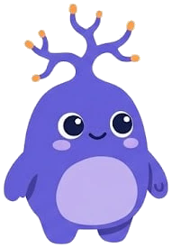

Miya tajribaga qarab oʻzgaradi
Yangi narsani oʻrganib, mashq qilganingizda miya oʻz aloqalarini oʻzgartira oladi.
Mavzu
“Miya tuzilishi” mavzusidagi faktlar — har biri tekshirilgan manba bilan.

Yuklanmoqda…
Yangi narsani oʻrganib, mashq qilganingizda miya oʻz aloqalarini oʻzgartira oladi.
Oʻsmirlikda miya hali rivojlanadi va 20 yoshlarning oʻrtasi yoki oxirida toʻliq yetiladi.
Miya tanaga nisbatan kichik, lekin u tana energiyasining qariyb beshdan bir qismini sarflaydi.
Miyangizda taxminan 86 milliard nerv hujayrasi va ularni qoʻllab-quvvatlaydigan deyarli shuncha boshqa hujayra bor.
Mielin — nervlarni oʻrab turuvchi yogʻli qobiq, u signallarning tez yetib borishiga yordam beradi.
Neyronlar sinaps deb ataladigan kichik boʻshliqlarda neyromediator moddalar yordamida xabar uzatadi.
Miyaning orqa qismidagi burmali kichik shar — miyacha — harakatlarni muvofiqlashtiradi.
Miyaning eng pastki qismi uxlayotganingizda ham nafas olishingiz va yuragingiz urishini taʼminlaydi.
Katta yoshli odamning miyasi taxminan 1,4 kg (uch funt) keladi.
Miyaning oʻng yarmi asosan tananing chap tomonini, chap yarmi esa oʻng tomonini boshqaradi.